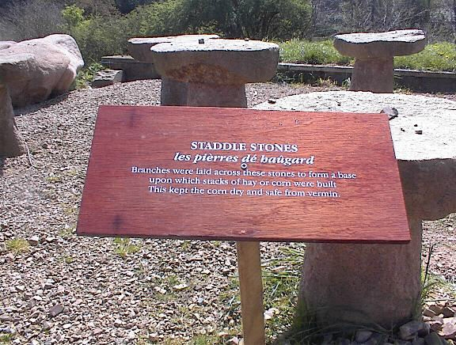
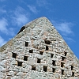

Hamptonne
À Hamptonne, nou peut vaie comme tchi qu'les gens vivaient à la campangne au temps pâssé.
La Maîson Langlois nouos mouontre comme tchi qu'lé bestchias 'tait gardé à bas, auve l's appartéments pouor les gens à haut.
La Maîson Hamptonne prend san nom d'la fanmil'ye Hamptonne tchi acatit la fèrme en 1633. Ch'fut Laurens Hamptonne tchi liut la procliâmâtion du Rouai Charles II au Vièr Marchi en Févri 1649. Lé preunmié êtage d'la maîson fut ajouôté au seizième siècl'ye, et pis l'douaithe à deux êtages envithon la fîn du dgiêx-septième siècl'ye.
Lé Bâtisse Syvret tchi fut bâti d'vièrs 1830 est la pus récentes des trais maîsons. L's apprtéments sont bein hauts et r'sembl'yent ès maisons qu'nou 'taient à bâti à St. Hélyi à chu temps-là. Dans chu bâtisse nou trouve étout lé preinseu où'est qu'nou fait l'cidre au mais d'Octobre dé châque année.

Lé tou d'preinseu à Hamptonne
L's apparténances d'vîntent pus împortantes duthant lé dgiêx-neuvième siècl'ye et à Hamptonne j'avons eune boulangu'thie, eune tchèrquéthie, d's êtabl'yes et eune lav'thie auve san cappeur.
Lé colombyi - iun des deux colombièrs cârrés en Jèrri - s'trouve en fache d'la fèrme à l'aut' côté d'la vallée.
Lé vèrgi a 'té plianté auve tchiques difféthentes variétés d'pommes - des douoches et des suthes - qu'nou fait sèrvi pouor la faith'sie du cidre au s'tembre.


 |
 |
 |
|  |  |
||
 |
 |
 |
Viyiz étout: